Allele frequencies keep a memory of what happened to a population: whether it shrank recently, how many plants really contribute to the next generation, how far pollen and seed travel, how much it self-fertilises and whether its traits have diverged more than drift allows. Block 9 brings together five analyses that appear depending on the data you load.
Not every analysis suits every dataset. Bottlenecks and effective size require codominant genotypes from diploid plants; spatial structure, a coordinate for each plant; PST, measured traits. The 1 · Settings card tells you which ones apply to your data, and the block runs by itself when you open it.
| Analysis | Data required | Example in this chapter |
|---|---|---|
| Bottlenecks | Codominant, diploid, with declared populations of 10 plants or more. | Three simulated populations |
| Effective size (Ne) | The same. | Three simulated populations |
| Spatial structure | At least 10 plants, each with its own latitude and longitude; any marker. | Simulated stand · agave |
| Mating system | Codominant, diploid, with declared populations. | Three simulated populations |
| PST versus FST | Quantitative traits in two or more populations. | Maize morphology |
When a population shrinks, it loses its rare alleles first: an allele carried by only a few plants easily disappears if those plants leave no offspring. Expected heterozygosity, by contrast, barely changes, because it depends mainly on the common alleles. For a while the population is left with more heterozygosity than its number of alleles warrants. Cornuet and Luikart (1996) called this heterozygosity excess and turned it into a test.
The heterozygosity excess of this test compares the He calculated from allele frequencies with the value expected for the observed number of alleles. It has nothing to do with the heterozygote excess (Ho > He) of Block 4, which compares observed genotypes with Hardy–Weinberg proportions.
To know how much He “corresponds” to a given number of alleles, you have to assume how the alleles mutate. The app offers the three classic models (table 10.2) and, locus by locus, simulates samples from a stable population under the chosen model.
| Model | How an allele changes | When to use it |
|---|---|---|
| IAM · infinite alleles | Each mutation creates an allele that did not exist before. | Allozymes and markers without an ordering of sizes. With microsatellites it finds bottlenecks too easily. |
| SMM · stepwise | Each mutation adds or removes one repeat. | Very regular microsatellites. It is the most conservative: it struggles to detect reductions. |
| TPM · two-phase Di Rienzo et al. (1994) | Most mutations are single-step (95% by default) and the rest multi-step, with variance 12. | Microsatellites in general; it is the recommended model (Piry, Luikart and Cornuet, 1999). The app uses it together with the SMM. |
For each locus with n plants and k alleles, the app simulates coalescent genealogies of 2n copies under the chosen mutation model. It tunes θ = 4Neμ until the samples have about k alleles on average and keeps only those with exactly k (300 by default). The mean of their He is Heq, and the fraction of simulations with an He equal to or greater than the observed one is the excess probability of that locus.
If the plants self-fertilise, their two copies of a locus often descend from a single ancestral copy: n plants with inbreeding F carry on average n(2 − F) independent copies, not 2n. Fewer independent copies show fewer alleles, and the population would appear to have an excess without having shrunk. For this reason the app estimates FIS in each population and, if it is positive, simulates the equilibrium with n(2 − F) copies.
Each locus gives a noisy comparison; the conclusion comes from combining the loci. The app applies three statistical tests and two shape indicators (table 10.3).
| Test | What it does | How to read it |
|---|---|---|
| Sign test Cornuet and Luikart (1996) | Counts the loci with He > Heq and compares them with the number expected at equilibrium, which is slightly more than half because the distribution of He is skewed. | P < 0.05: too many loci with an excess. Low power. |
| Standardised differences (T2) | Sums (He − Heq)/SD over all loci and divides by √L. | P < 0.05: average excess. Requires 20 loci or more. |
| Wilcoxon signed-rank test Luikart et al. (1998) | Ranks the loci by the position of their He within their own equilibrium distribution and tests whether high positions predominate. | The most powerful with few loci (from 4). It is the one used by the interpretation and the key figures. |
| Mode shift Luikart et al. (1998) | Distributes the alleles of all loci into frequency classes (0–0.1, 0.1–0.2…). | L-shaped: stable. If the 0–0.1 class is no longer the largest, the distribution has shifted. Qualitative; requires large samples. |
| M ratio Garza and Williamson (2001) | M = k / (range of sizes in repeats + 1): after a reduction, gaps remain in the ladder of sizes. | M < 0.68 suggests a reduction older or longer than the one the excess detects. Requires sizes in bp and the motif. |
The Wilcoxon test assumes that, without a bottleneck, the differences He − Heq are distributed symmetrically around zero. They are not: given k, He usually lies slightly above its mean and occasionally far below it. With 200 stable populations of 40 plants and 20 microsatellites, simulated for this manual, Wilcoxon on the raw differences “found” a bottleneck in 47 (23.5%), instead of the expected 5%. Applied to the position of each locus within its equilibrium distribution, converted to a normal score, it rejected 17 (8.5%); the sign test, 10 (5%). That is why the app uses the second form. That 8.5% is still somewhat above the nominal level, because θ is estimated from the same data: one more reason to require TPM and SMM to agree.
| If… | then… |
|---|---|
| Wilcoxon gives P < 0.05 for excess under both TPM and SMM | There is a signal of a recent reduction. Confirm it with another sample or with the history of the population. |
| Only the IAM gives an excess | With microsatellites this is not enough: the IAM exaggerates the excess. |
| The excess comes from one or two loci | Check those loci: a null allele or selection affects a single locus, demography affects them all. |
| There is a significant deficit | The population may have grown or received immigrants carrying rare alleles. |
| M < 0.68 without an excess | An older or longer reduction is compatible; the excess has already faded. |
| There are fewer than 10 polymorphic loci or fewer than 20 plants | The test has low power: “no signal” does not prove stability (Luikart and Cornuet, 1998). |
The signal is transient: once the population reaches a new mutation–drift equilibrium, the excess disappears even if the population remains small.
The effective size, Ne, is the number of plants in an ideal population that would lose diversity through drift at the same rate as the real one. It is almost always smaller than the census size: not all plants reproduce, some leave far more offspring than others and population size changes from year to year. On average, Ne is about one tenth of the number of adults (Frankham, 1995). It is the figure that matters for conservation, because it sets the rate at which diversity is lost and inbreeding increases.
The app estimates it with the linkage disequilibrium method (Hill, 1981; Waples, 2006). In a small population, drift creates random associations between alleles at unlinked loci. The association is measured with r², which has two sources: the sampling of S plants (about 1/S) and drift (about 1/(3Ne)). The app subtracts what is expected from sampling and converts the remainder into Ne with the corrections of Waples (2006). It estimates the Ne of the parental generation of the sampled plants.
In the Cuello_botella population, S = 40 plants were analysed. Sampling contributes E(r²) = 1/S + 3.19/S² = 0.025 + 0.00199 = 0.02699 (Waples, 2006, for S ≥ 30). The observed r² is 0.03171, so the share due to drift is r²′ = 0.03171 − 0.02699 = 0.00472. Then Ne = [1/3 + √(1/9 − 2.76 r²′)] / (2 r²′) = (0.3333 + 0.3132) / 0.00944 = 68.5. The population was simulated with 40 plants: in 150 identical simulations the median estimate was 42, and this sample fell above the 90th percentile.
| Estimator | What it is based on | When it is useful |
|---|---|---|
| Linkage disequilibrium Waples (2006); Waples and Do (2008) | Mean r² between pairs of loci minus the value expected from sampling. It excludes alleles with a frequency below Pcrit (0.02) because they inflate r². Interval by jackknife over loci. | The most precise single-sample estimator. It works well with small or moderate Ne; with large Ne the upper limit is ∞. |
| Heterozygote excess Pudovkin et al. (1996) | With few parents, male and female allele frequencies differ by chance and the offspring carry more heterozygotes: D = (Ho − He)/He and Ne = 1/(2D) + 1/(2(D + 1)). | Only with very small Ne (tens). With D close to 0 its upper limit is ∞. |
| Reference figures · Ne ≥ 50 avoids inbreeding depression in the short term and Ne ≥ 500 retains evolutionary potential (Franklin, 1980); Frankham et al. (2014) propose raising them to 100 and 1000. | ||
| If… | then… |
|---|---|
| The estimate or its upper limit is ∞ | The r² cannot be distinguished from sampling noise: Ne is large relative to the sample, not unknown. Report the lower limit. |
| The limits fall below 50 or below 100 | The population is losing diversity rapidly; this is a conservation warning. |
| The population self-fertilises or has a high FIS | Inbreeding correlated across loci inflates r² and lowers Ne; interpret it as a minimum. |
| The sample mixes subpopulations or immigrants | Admixture also creates disequilibrium: check the structure (Block 7) before reporting. |
| There are fewer than 25 plants or few loci | The interval will be very wide; more loci help as much as more plants. |
The method assumes random mating, unlinked loci and a closed population, and estimates Ne per generation.
Within a continuous population, if seed falls close to the mother and pollen travels only short distances, neighbouring plants are relatives: full sibs, half sibs or cousins. Relatedness declines with distance and forms patches of families. Measuring how relatedness falls with distance tells you how far genes move in each generation, without tracking a single seed (Vekemans and Hardy, 2004).
| Statistic | Definition | What it tells you |
|---|---|---|
| Fij · relatedness Loiselle et al. (1995) | Σa (pia − pa)(pja − pa) / Σa pa(1 − pa) + 1/(2n − 1) | For codominant markers. 0 between plants taken at random; 0.25 between full sibs and 0.125 between half sibs. |
| r · autocorrelation Smouse and Peakall (1999) | Calculated from a centred squared genetic distance between plants. | For any marker. Without structure its expected value is −1/(n − 1), not 0: the permutation band takes this into account. |
| F1 | Mean relatedness in the first distance class. | How closely related neighbours are. |
| bF | Slope of Fij on ln(distance), using all pairs. | How fast relatedness declines. |
| Sp Vekemans and Hardy (2004) | Sp = −bF / (1 − F1) | The strength of the structure, comparable across studies. |
| Nb · neighbourhood | Nb ≈ 1/Sp = 4πDσ² | Together with the plant density D, it gives the gene dispersal variance σ² per generation. |
The app groups the pairs of plants into distance classes containing the same number of pairs, calculates the mean relatedness (or r) of each class and builds a 95% band by permuting the plants among the locations 999 times. A class above the band indicates that those plants are more closely related than chance can explain.
If you load several populations kilometres apart, the pairs of plants from different populations fall into the distant classes and drag the differentiation between populations, which Block 5 already measures, into the correlogram. That is why pairs defaults to within populations (fine scale): only pairs from the same population, with relatedness referred to the allele frequencies of each population and permutations within each population, all combined into a single correlogram. all pairs mixes both scales. If all the plants of a population share the coordinate of the site, there is no fine-scale structure to measure: use the isolation by distance analysis of Block 6.
In the simulated stand, bF = −0.0207 and F1 = 0.0292, so Sp = 0.0207 / (1 − 0.0292) = 0.0213 and Nb ≈ 1/Sp = 47 plants. With a density of 400 plants per hectare (D = 0.04 plants/m²), σ² = Nb/(4πD) = 47 / (4π × 0.04) = 93 m², that is, σ ≈ 9.7 m per generation. The simulation used σ² = 78 m² (σ = 8.8 m), which corresponds to Nb = 39: Sp gives the correct order of magnitude, with the usual error of this approximation.
| If… | then… |
|---|---|
| The first class lies above the band and bF is significant | Neighbours are relatives. Report Sp and the distance up to which the signal persists. |
| Sp is around 0.01 | Weak structure, typical of outcrossing species (mean Sp 0.013; Vekemans and Hardy, 2004). |
| Sp is around 0.04 or more | Strong structure, as in species with mixed mating (0.037) or selfing species, or with seed that falls nearby. |
| No class falls outside the band | Pollen and seed move far at this scale, or the sample lacks nearby plants. |
| You sampled few plants or only distant plants | About 100 plants or more are recommended, with many pairs of close neighbours. |
| There are clones | Ramets of the same genet inflate F1: keep one ramet per genet. |
A plant that self-fertilises produces more homozygous offspring. If the selfing rate s remains constant over several generations, inbreeding stabilises at F = s/(2 − s), from which s = 2F/(1 + F). The app uses the Weir and Cockerham FIS of each population (Block 4) and its bootstrap interval over loci to estimate s and the outcrossing rate t = 1 − s.
| If… | then… |
|---|---|
| FIS is positive at almost all loci | The deficit is genome-wide: selfing or matings between relatives. s is a reasonable estimate. |
| The deficit comes from a few loci | Suspect null alleles (Block 4) before selfing. |
| There is spatial structure | Matings between related neighbours also produce FIS > 0; s overestimates selfing. |
| You mixed plants from different groups | The Wahlund effect creates a deficit without inbreeding. |
| You need the actual rate for one season | Genotype mothers and their seeds and use a mixed-mating model (Ritland, 2002). |
Drift differentiates populations equally across the whole genome: FST from neutral markers measures by how much. A quantitative trait under selection may diverge more (divergent selection, local adaptation) or less (stabilising selection, the same optimum everywhere). Its FST counterpart is QST = σ²B/(σ²B + 2σ²W), calculated from additive genetic variances between (B) and within (W) populations, which require a common garden or crosses (Whitlock, 2008).
With field measurements only phenotypic variances are available. PST uses them under two explicit assumptions: c, the proportion of the between-population variance that is additive genetic, and h², the heritability within populations (Brommer, 2011). PST = cσ²B/(cσ²B + 2h²σ²W). With c/h² = 1 the comparison is at its most optimistic.
The app obtains σ²B and σ²W from a one-way ANOVA. In the random-effects model, the ratio F/(1 + n0λ) follows an F distribution with G − 1 and N − G degrees of freedom, where λ = σ²B/σ²W and n0 is the mean population size (Searle, Casella and McCulloch, 1992). This yields exact limits for λ and, since PST increases with λ, for PST. With G populations, σ²B rests on only G − 1 degrees of freedom: with three populations the interval is very wide, and a high PST may be compatible with drift.
| If… | then… |
|---|---|
| The whole PST interval lies above FST | The trait has diverged more than drift would cause: divergent selection, if c/h² is realistic. |
| The whole interval lies below FST | Stabilising selection: the populations are more alike than expected. |
| The interval crosses FST | There is no evidence against drift. |
| The conclusion changes when c/h² is lowered to 0.5 | It depends on the assumption: say so, or measure the trait in a common garden. |
| You have fewer than 10 populations | Expect wide intervals; the comparison has low power. |
FST must come from neutral markers in the same populations (θ from Block 5).
The 1 · Settings card shows only the settings of the analyses that apply to your data. After changing one, press Run the analyses.
| Setting | Options | Recommendation |
|---|---|---|
| IAM · TPM · SMM | Mutation models of the excess test; TPM and SMM by default. | TPM and SMM with microsatellites. |
| accepted simulations per locus | 50 to 2000 (default 300). | 300; 1000 for publication. |
| TPM single-step fraction · TPM variance | Defaults 0.95 and 12. | Those of Piry et al. (1999). |
| repeat motif (bp) for M-ratio | 1 to 6 (default 2). | The motif of your microsatellites. |
| Ne (LD method): exclude alleles rarer than | 0 to 0.1 (default 0.02). | 0.02 (Waples and Do, 2010). |
| classes · permutations | 3 to 30 classes with the same number of pairs; 99 to 9999 permutations. | 10 classes and 999 permutations. |
| pairs | within populations (fine scale) or all pairs; appears with two or more populations. | Within populations. |
| c · h² · FST | c and h² from 0.05 to 1; neutral reference FST. | Try c/h² = 1 and 0.5. |
| Random seed | Integer. | Report it. |
| Card | Content | Figures |
|---|---|---|
| 2 · What the analyses say | Key figures and interpretation of all analyses; download of everything as CSV. | — |
| 3 · Recent bottlenecks | Tests by population and model, locus-by-locus table. | He versus Heq · mode shift |
| 4 · Effective population size | Observed and expected r², Ne with interval and Ne from heterozygote excess. | Ne by population |
| 5 · Fine-scale spatial genetic structure | Distance classes, value, permutation band, P, bF, Sp and Nb. | Correlogram |
| 6 · Mating system | FIS, selfing and outcrossing rates with intervals. | — |
| 7 · PST versus FST | σ²B, σ²W, ANOVA, PST with exact interval and comparison with FST. | PST by trait |
Three files take you through the block. The two microsatellite files were simulated for this manual with known parameters and are in the manual/herramientas folder, together with the program that generates them (generar-demografia.pl). The third is the app’s maize morphology example. The values are those produced by the app with the default settings and seed 1.
| File | Content | What was simulated |
|---|---|---|
ssr-demografia.csv | 3 populations × 40 plants × 20 microsatellites (2 bp motif). | Estable: sample from a large population at equilibrium (TPM model). Cuello_botella: 40 plants for 8 generations and 400 in the last one, so Ne ≈ 40. Autogama: equilibrium with 60% selfing (F = 0.43). |
ssr-espacial.csv | 200 plants with latitude and longitude in a 1 ha plot, 12 microsatellites. | A continuous stand of 22,500 plants spaced 5 m apart, with 3000 generations of seed dispersal (σ = 5 m) and pollen dispersal (σ = 10 m from the mother): σ² = 78 m² and Nb = 39. |
| Maize · morphology | 3 landraces × 25 plants, 9 traits. | The mean of each landrace was fixed in the simulation; there are no common-garden data. |
ssr-demografia.csv onto Drop your file here, check that the app sees 20 codominant loci and 3 populations, and press Build the dataset and run the checks →.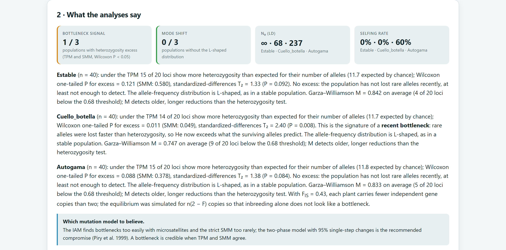
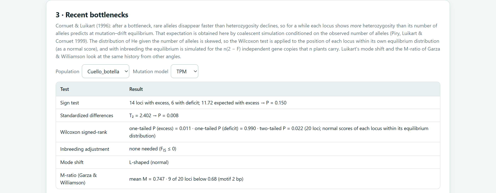
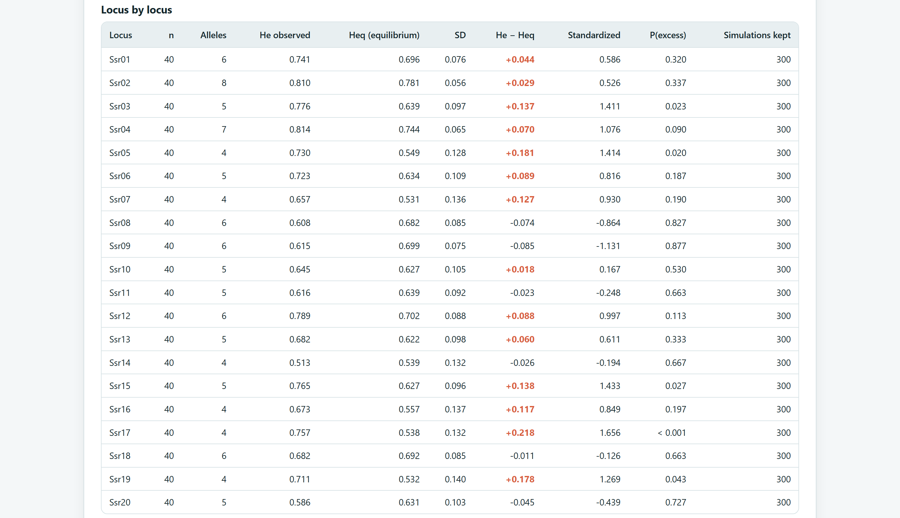
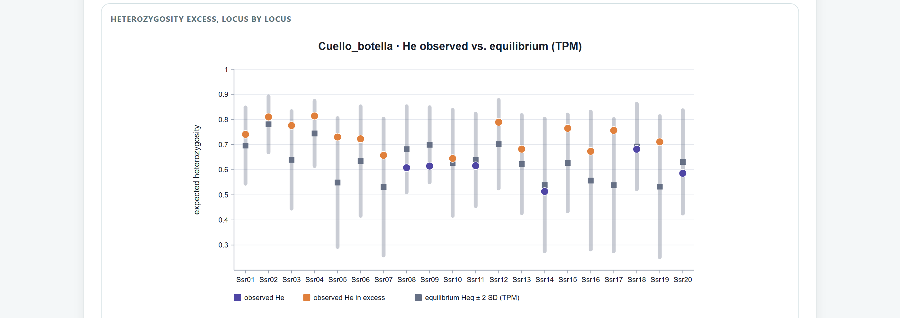
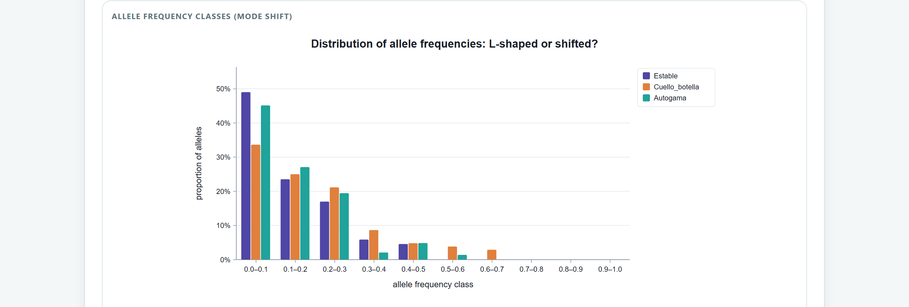
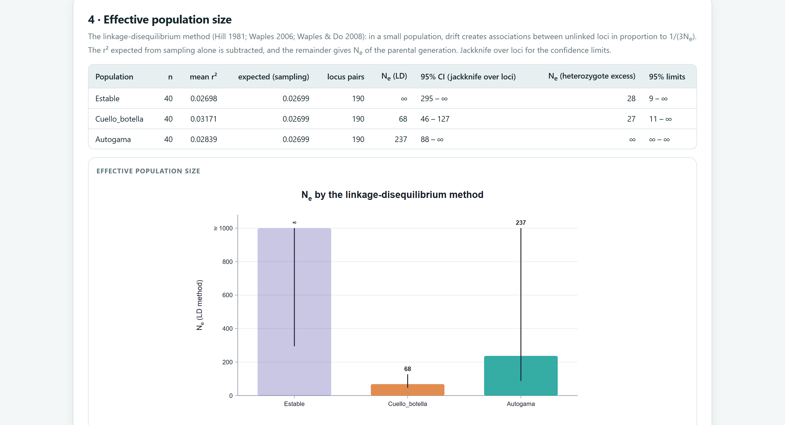
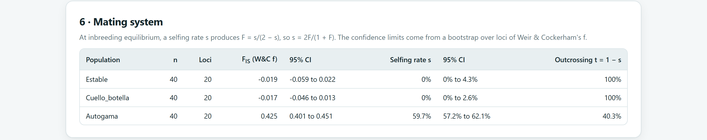
ssr-espacial.csv in Block 2 (200 plants with Latitude and Longitude, 12 loci) and build the dataset.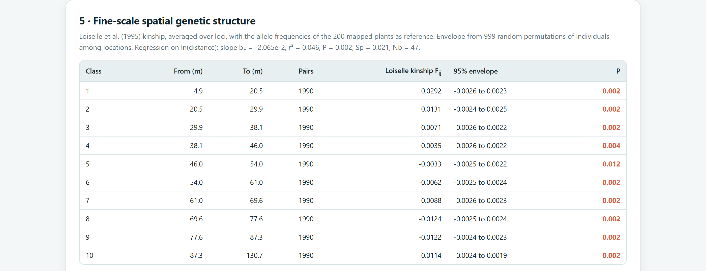
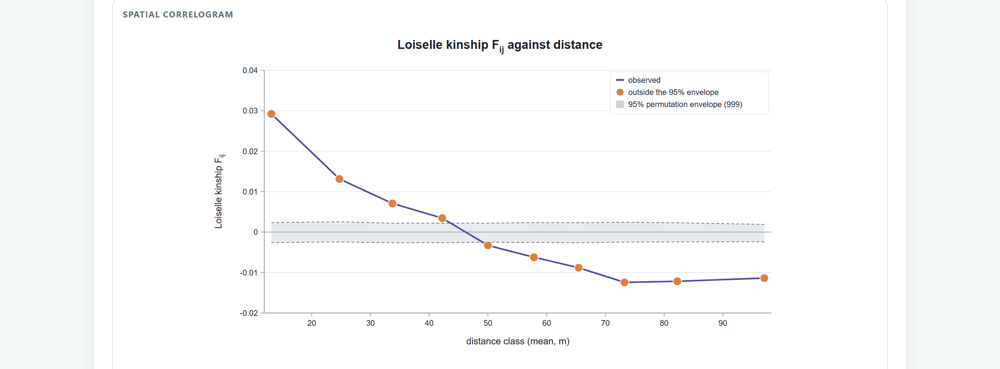
The other cards also run with this file, although they are not its purpose, and they illustrate two precautions. The selfing rate comes out at 10.5%, even though in the simulation only 4% of the seeds came from the plant’s own pollen: the rest of the FIS of 0.056 comes from matings between related neighbours, as section 10.4 warns. And the bottleneck test finds an excess only under TPM (P = 0.006; under SMM, P = 0.088): the simulation started from even allele frequencies and the stand is not at mutation–drift equilibrium, so the app reports it as a weak signal.
The Agave · AFLP example includes coordinates for each plant in four populations 150 to 400 km apart. With within populations (fine scale), the app uses only the 760 pairs of plants from the same population and the Smouse and Peakall r, because the bands are dominant (figure 10.15). With all pairs, the first two classes (up to 5 km, pairs from the same population) come out with r = 0.092 and 0.083, far above the band, and the distant ones are negative: that “structure” is the differentiation between populations.
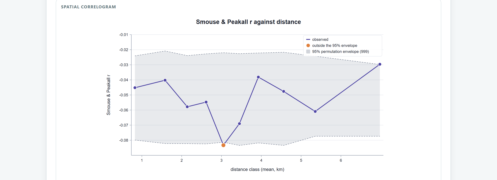
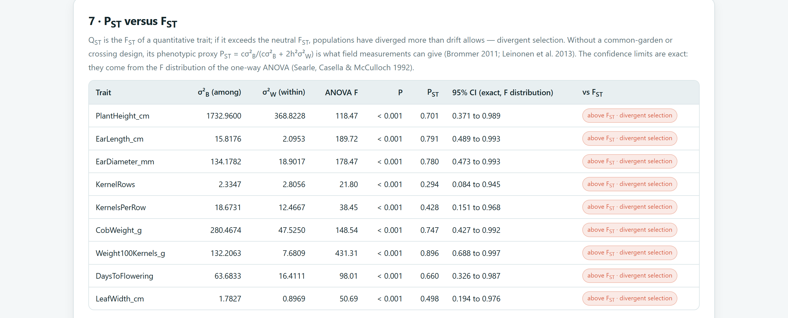
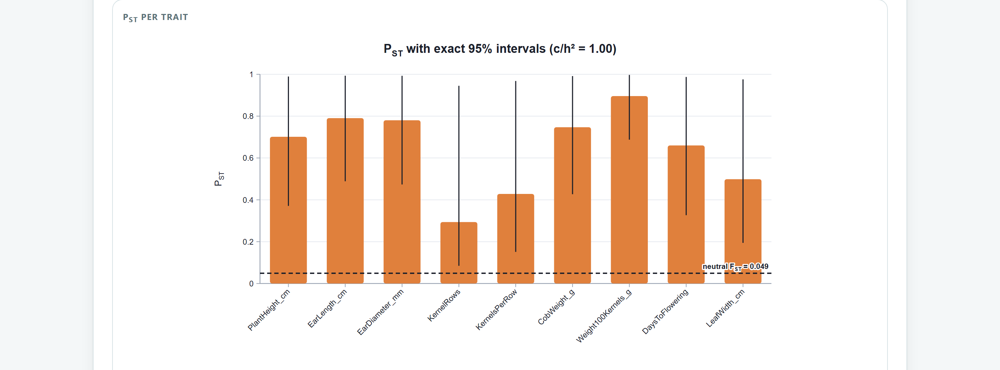
For bottlenecks: mutation models and TPM parameters, accepted simulations per locus, tests with their P values and whether an inbreeding adjustment was applied. For Ne: method, Pcrit, number of plants and loci, and the interval. For spatial structure: estimator, whether pairs were within populations, classes, permutations, F1, bF with its P value, and Sp. For selfing: FIS with its interval and the caveat that it is an indirect inference. For PST: c/h², the reference FST and how the intervals were obtained. The methods section of the Block 10 report drafts all of this, including the seed.
For this manual, the Heq simulated under the IAM matched the exact value from Ewens’s formula in four cases (40 to 80 copies), within one standard error, and the unconditional expectations of the IAM and SMM matched theory. The exact Wilcoxon test matched an independent enumeration in 300 cases with ties. With an independent coalescent generator, the corrected test rejected 8.5% of 200 stable populations (the sign test, 5%), 3% of 100 selfing populations with the adjustment (15% without it) and detected 76% of 49 reduced populations. The linkage disequilibrium Ne and Pudovkin’s D were recalculated in another language from the genotype counts with no differences; in 150 simulations with Ne = 40, the median was 42 and the interval covered the true value 95% of the time. Loiselle’s relatedness, F1, bF and Sp of the stand, and the Smouse and Peakall r of the agave with the ordered-pairs formula, were recalculated with no differences. The exact PST interval covered the true value in 94 to 96% of 2000 datasets simulated per scenario.
The next chapter concludes the analyses: Block 10 gathers figures, tables and interpretations into a report and a ZIP package ready for publication.